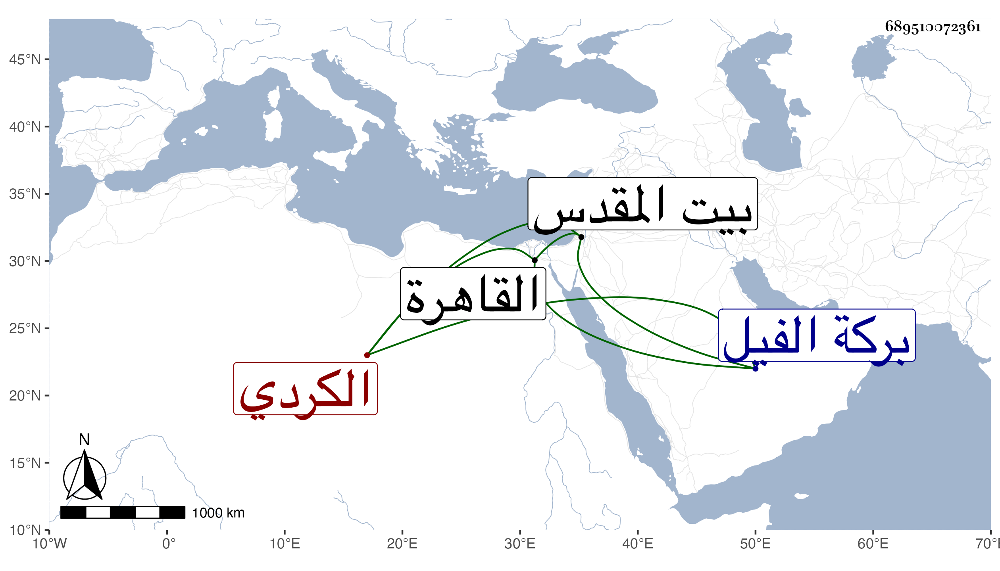

0902Sakhawi.DawLamic.ITO20230111-ara1.EIS1600.689510072361
Biography ID: 689510072361
493
عيسى بن علي بن شهريار الكردي ، كان حسن السمت منور الشيبة سمع ببيت المقدس من الزيتاوي ابن ماجه ثم سمع فيه على الشهاب الجوهري بالقاهرة وأعلم شيخنا في أثناء ذلك بسماعه وأجاز للجماعة . ذكره شيخنا في معجمه قال : ورأيت سماعه على البهاء بن عقيل بقراءة الزين العراقي وكانت له زاوية على بركة الفيل زرناه فيها . مات سنة خمس أو ست فيما أحسب والمقريزي في عقوده وقال أنه كان مقبولا حسن السمت ممن يتبرك بدعائه ، وجزم في وفاته بخمس .
